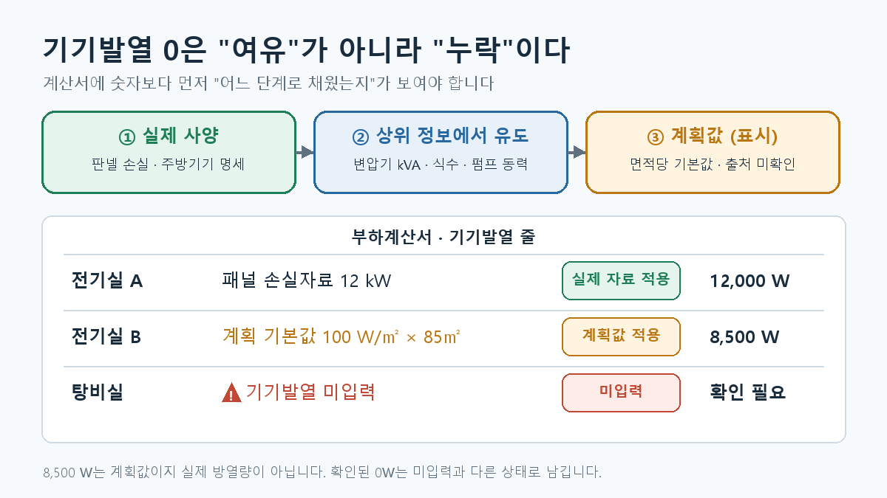

전기실의 냉방 용량을 검토하는데 기기발열이 0W로 표시됐다고 해보겠습니다. 그 방에 변압기와 전기 패널이 있다면 0은 설계 결과가 아니라 확인해야 할 입력 상태일 수 있습니다.
반대로 기기가 없는 실에서 확인을 마친 0W는 정상적인 값입니다. 그래서 계산서에는 확인된 0과 미입력을 구분하는 방법이 필요합니다.
기준 상태: 기기발열은 장비와 운전조건에 따라 크게 달라집니다. 아래 면적당 기본값은 출처를 확인하지 못한 계획 단계 값이며, 장비 사양을 대신하는 확정값이 아닙니다.
가장 먼저 실제 방열량을 받습니다
기기에 공급하는 전력이 모두 그 실의 열로 남는 것은 아닙니다. 장비의 손실, 운전률, 열이 방출되는 위치를 확인해야 합니다.
전기실이라면 변압기와 패널의 손실자료를, 제어실이라면 패널·모니터·서버의 운전조건을 확인합니다. 주방이라면 설치 기기의 종류와 수량, 후드 및 배기 구성을 함께 봅니다.
실제 장비 목록과 제조사 자료가 있으면 그것을 계산의 출발점으로 삼습니다.
자료가 부족하면 상위 정보로 추정합니다
설계 초기에 장비별 방열량을 받지 못해도, 상위 단계의 자료가 있을 수 있습니다. 예를 들어 변압기 용량과 예상 부하율, 장비의 정격과 운전시간 등입니다.
변압기의 손실을 검토할 때는 무부하손과 부하에 따라 변하는 손실을 구분합니다. 이해를 위한 예로 무부하손을 1.5kW, 정격 부하손을 10kW, 부하율을 60%라고 가정하면 다음과 같습니다.
1.5 + 10 × 0.6² = 5.1kW
이 값은 계산 구조를 보여주는 예일 뿐입니다. 실제 설계에는 해당 제품의 손실자료와 설치 위치를 확인해야 합니다.
앱의 기본값은 출처가 확인되지 않았습니다
현재 검토 대상 앱에는 전기실 100W/㎡, 중앙제어실 50W/㎡, 사무실 9W/㎡ 등의 기본값이 있습니다. 이 값들은 한때 앱 안의 “부하 원단위 상식범위” 표에서 유도했다고 설명했습니다.
이후 그 상식범위 표의 출처를 확인하지 못해 표를 삭제했습니다. 따라서 그 표에서 유도했다는 설명만으로 기본값의 근거가 확보됐다고 말할 수 없습니다.
이 숫자들을 사용할 때는 적어도 다음을 표시해야 합니다.
- 실제 장비 사양이 아직 제공되지 않았다는 사실
- 적용한 면적당 기본값과 면적
- 장비 자료를 받은 뒤 교체해야 하는 값이라는 사실
예를 들어 전기실 85㎡ × 계획 기본값 100W/㎡ = 8,500W라고 계산할 수는 있습니다. 하지만 8,500W가 실제 패널과 변압기의 방열량이라고 확정할 수는 없습니다. 장비 목록이 나왔을 때 차이가 얼마나 나는지 다시 검토해야 합니다.
세 가지 상태를 계산서에 구분합니다
| 상태 | 의미 | 계산서 표시 |
|---|---|---|
| 실제 자료 적용 | 장비 사양이나 확인된 손실자료 사용 | 자료와 계산값 |
| 계획값 적용 | 장비 자료가 없어 가정을 사용 | 적용값·면적·추후 확인 표시 |
| 미입력 | 아직 값도, 0이라는 확인도 없음 | 확인 필요 |

기기가 없음을 확인해 0W로 입력했다면 그 역시 확인된 값으로 남깁니다. 미입력과 같은 상태로 취급하지 않습니다.
탕비실처럼 설치할 기기를 하나씩 셀 수 있는 공간에는 면적당 기본값을 자동으로 넣기보다 기기 목록을 확인하는 편이 낫습니다.
현재 앱의 동작(2026년 10월 18일 코드 확인): 기본값이 없는 실에서 기기발열 칸을 비워 두면 실 입력 화면과 부하계산서에 “미입력”이 표시됩니다. 다만 0을 입력해도 같은 “미입력”으로 처리되어, 확인된 0과 미입력을 아직 구분하지 못합니다. 이 구분은 남은 작업입니다.
냉방이 없는 기계실도 방열 검토는 필요합니다
기계실이나 발전기실에 냉방을 설치하지 않는다고 해서 방열량을 무시하는 것은 아닙니다. 기기에서 실로 나오는 열, 외기 조건, 허용 실온을 바탕으로 필요한 환기량을 검토합니다.
냉방부하로 처리하지 않는다와 발열 검토가 필요 없다는 다른 말입니다.
설계할 때 확인할 순서
- 실 안의 장비와 실제 운전조건을 확인합니다.
- 제조사 방열량이나 손실자료가 있으면 우선 적용합니다.
- 없으면 확인된 상위 자료로 계획값을 유도합니다.
- 면적당 기본값을 사용했다면 그 사실과 확인 시점을 계산서에 표시합니다.
0, 계획값, 미입력을 서로 다른 상태로 관리합니다.
기기발열 계산에서 중요한 것은 빈칸을 빨리 숫자로 채우는 일이 아닙니다. 그 숫자가 어디서 왔고, 아직 무엇을 확인해야 하는지 보이게 하는 일입니다.